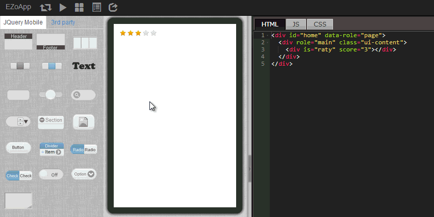

In addition to jQuery Mobile kits, EZoApp also has many 3rd party components developed by EZo's own R&D team. Other than the map and page swiping described in the previous sections, another distinctive component is raty-- the rating component that uses stars to give scores.
Just like in many of the singing or talent shows, or the rating feature in Google Play or App Store, more and more apps or websites today provide users with a rating mechanism to allow them to participate in guarding the quality of the contents as well as to give instant feedback. Although everyone understands the reasoning of this feature, the technique behind often stumps users, who don't know where to start. As the saying goes, "it is easier said than done."
raty component provided by EZoApp can quickly generate the star rating mechanism. Just write some simple code and it is ready to start scoring. It's very useful!
Link of example:
Integrating JavaScript in your app - star rating

Similar to the steps described in the previous sections, use the drag-and-drop method to drag the raty component of the 3rd party components into the editing screen.

与 Same as for the raty component, drag the navbar component from the left side into the editing area. Click on the button in raty , then click on the Add New icon that appears on the upper-right corner to add a new button.
After both components are added, we need to link them together, which means to create a mechanism that when a button is clicked, a corresponding number of stars will appear. The linking mechanism uses the gk component available only in EZoApp. Because the gk component already contains most of the program code, we only need to type a few words to easily complete the linking operation.
Nevertheless, before linking, we need to add some tag attributes in
navbar to provide numerical values that correspond to the button clicked.
HTML：
<div id="home" data-role="page">
<div data-role="header" data-position="fixed" data-theme="b">
<h3>Score</h3>
</div>
<div role="main" class="ui-content">
<div is="raty" score="0" id="star1"></div>
<div data-role="navbar" id="star_btn1" style="margin:10px 0 30px;">
<ul>
<li>
<a num="1">bad</a>
</li>
<li>
<a num="3">normal</a>
</li>
<li>
<a num="5">good</a>
</li>
</ul>
</div>
</div>
</div>
JS：
$(document).on('pageinit', function () {
$('#star_btn1').on('click', function (e) {
var starnum = $(e.target).attr('num');
$('#star1').gk('score', starnum); //使用 gk 组件
});
});

Click Preview. We can see that when a button is clicked, a corresponding number of stars will appear!
Link of example:
Integrating JavaScript in your app - star rating